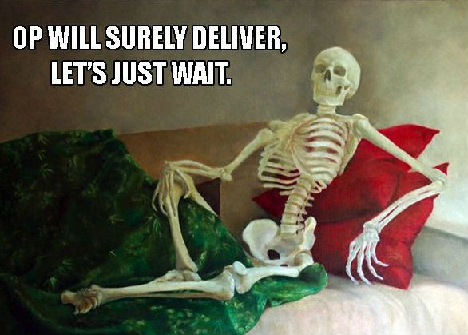
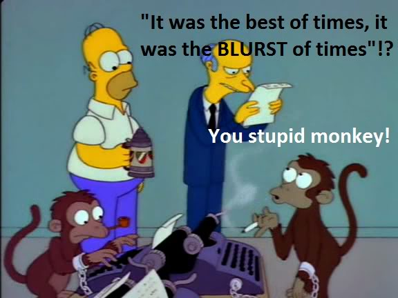
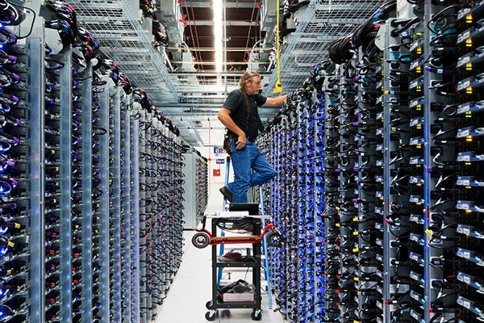

What Is DevOps?
It's not all about tools.
Created by Laurence J MacGuire a.k.a Liu Jian Ming
ThoughtWorks Xi'An, 2014/12/04

The 5 "W's"
- Who?
- What?
- Where?
- When?
- Why?
- ... and How?
Waterfall Project Management
It makes perfect sense
The Client
Marketing
BA/PM
The Programmers
And then the QAs
Meanwhile, as a PM/Marketing
As a Client
Agile Project Management
The Same Roles
The Client
Marketing | BA | Programmer | QA
和谐 / 合作
Positive Changes
- Unit testing
- Behaviour testing
- Integration testing
Tada!
Continuous Integration
Oh, wait
Code that only lives in Git is dead.
And where's the Ops guys?
Developers
Responsibilities
- Write code
- Fix bugs
- Test things
Developers
Requirements
- Tools (Editors, IDEs, Debuggers, etc)
- The Internet (LOL, HuaWei)
- Clear direction from 'Business Roles'
- An Ops team to run their software
Developers
Wants
- Build cool stuff
- Use cutting/bleeding edge tools
- And ship fast, move on to the next cool thing
- No bugs
Operations
"SysAdmins" & "NetAdmins"
REA's Operations people
- Jesse (American guy, Networking)
- Javier (General infrastructure)
- Wigs (Security)
Operation
Network Admins
Operations
Systems Admins
Operations
Security

Stuff they do
- Setup active directory
- Install and repair servers
- Install and maintain network equipment (800+ users)
- Plan for huge networks
- Install phone systems
- Know Linux/Windows/Cisco IOS by heart
- (All that command-line magic!)
- Shutdown and restarted *ALL* of EQX Saturday
- Last line of defense for any IT related issue
Also
Operations Redux
Responsibilities
- Keep systems up and running
- Up-to-date
- Secure
- Working
- Provision systems
- because of growth
- because of new requirements
Operations
Requirements
- Stable/Predictable software
- Clear/Consistent growth/change plan
Operations
Wants
- Replace themselves w/ a script
- Never hear their pagers
Conflict!
- Cutting/bleeding edge software is NOT stable/predictable software
- Rushed releases is NOT a clear change/growth plan
Conflict!
- Dev: "I want {mongodb-2.Xalpha|amazing-non-ACID-compliant-'database'-beta}"
- Sysadmin: "Nope. It's unstable"

Conflict!
- Sysadmin: "There's a bug in production."
- Dev: "It works in development. kthxbai."

Conflict!
- Dev: "I fixed the problem w/ `chmod -R 777 /`"
- Sysadmin: "*&$(*&@#(*&#$"

Conflict!
- Dev: "We want to ship this software"
- Sysadmin: "Ok. Our next change window is in 18 days."

Battle of (Two) Roles
- Sysadmin very protective of their turf
- Developers relinquish accountability
It's bad. It's a self-reinforcing cycle and everybody loses.
Continuous Delivery
An extension of Agile
Cut delivery time (each iteration, or less?)
Stability through constant change
Increase visibility/feedback
We can do that with delivery
But wait! That fence!
What is DevOps?
DevOps is NOT a tool.
DevOps is NOT someone.
DevOps is NOT team.
Right, but What is DevOps?
Development & Operations
It's bridging the gap between development and operations
DevOps is a way of doing things. It's an attitude.
Positive Changes
- Moore's Law: the cost of virtualisation is minimal
- Better support for all things distributed
Primitives
- Server vs Instance
- Harddrive vs Storage
- Datacenter vs VPC
Awesome!
- Composable tooling
- We can program this stuff!
Paradigm Shift
Infrastructure barrier of entry MUCH lower- Callable through APIs
- Mostly requires theoretical knowledge
- Much less practical experience
Paradigm Shift
Traditional Sysadmin offerings have changed- Support these primitives
- Virtualisation is isolation
We can leverage their work! And we must!
10 Types of People
There are 10 types of people. Those who can read binary, and those who can't-- The Internet
There's More to it!
[Good] --------------------------(Larry)-----------(Internet Explorer) [Evil] [Noodles] -------(ShanXi)-----------------(Larry)---(GuangXi)--------- [Rice] [LvRouHuoShao] ---------(Larry)---------------------------------- [RouJiaMou]
And it's all good!
Everyone is different
No one is better
Everyone has something to contribute
Eliminating Binaries and Barriers
- People fall in their own (comfortable) place
- Some still at either extreme
- On average, everyone is closer
How do you think this makes us better, as human beings, and as a team?
In Practice
Everyone is more aware of others
- Their preferences
- What annoys them
- What they know and don't
- How they can help us, and we them
Bridging the gap / Redefining roles
[Ops] (Javier)----(Colin)--(Karel)-----(Larry)-------------(WenBo)----- [Dev]
We've all shifted towards each other. That's a good thing!
Development Heavy People
- Write code, write tests, debug, bala bala
- Bring software craftsmanship to the 'opsy' people's tools
- Testability
- Code quality & metrics
- Code reviews & Pair programming
- An Agile process
Operations Heavy People
- Maintain infrastructure, etc
- Bring Operations experience and knowledge to devs
- Architecture due-dilligence
- Handling scale & Resiliency
- General ops experience e.g., a bit of paranoia
Collaboration and Independence
Both sides contribute. No one pulls. Everyone is better off.
Enabling teams
- Let teams be flexible: Software and versions
- Let teams be in control: How and when they deliver software
In true agile fashion
Continuous improvement
- Identify pain-points
- Identify tech-debt
- Refactor & simplify
Simplify even more. Reduce the barrier, to include more people.
That "DevOps" role
Ops guys that code / Code guys that ops
Useful in (very) large organisations
- Follow the 80/20% rule
- Assigned in development teams
- Offload work from the real ops guys
- Hack code vs hack servers
- Facilitate role transitions
We don't do DevOps
Karel, Lauchlin, DanX, Larry don't *do* DevOps
We make our teams better at it
Is there anything technical?
All you've talked about is human resources and project management
How is it Done? 3 Tenets
Repeatability: Automation
Visibility: Logging, monitoring and alerting
Flexibility: Adequate response to change
Repeatability
Repeatability is the ease with which a process can be re-done.
It's important because it assumes a process and it's dependencies has been completely understood and distilled to very simple form. It is executable documentation.
Repeatability
$ ftp production-site.com > put index.php > put lib/something.php $ ssh ...Error prone.
$ RAILS_ENVIRONMENT=production rake deployNot error prone. Anyone can run it, and see if it succeeds. Makes few, if any assumptions.
Repeatability
Plenty of tools exist
- AWS
- Ansible
- Puppet
- Chef
- SaltStack
- cfengine
- Docker
- Vagrant
- Git
- etc ...
Tools: Does it matter?
No!
What it is
Does your tool meet these criteria?
- Is simple?
- Does the same thing every time?
- Clearly tells you if something went wrong?
Good
Visibility
Visibility is the ease with which one can extract valuable information
It is important because we need to know if something goes wrong, and be able to debug it in order to fix it
Visibility
Too much information, can't extract value.
$ cat /dev/random > /dev/console
Too little information, no value.
$ rake deploy 2&> /dev/null
Better. Organised, extractable
Nov 30 17:08:45 cnmlarry NetworkManager[1151]:Activation (wlan0) Stage 4 of 5 (IPv6 Configure Timeout) scheduled... Nov 30 17:08:45 cnmlarry NetworkManager[1151]: Activation (wlan0) Stage 4 of 5 (IPv6 Configure Timeout) started... Nov 30 17:08:45 cnmlarry NetworkManager[1151]: Activation (wlan0) Stage 4 of 5 (IPv6 Configure Timeout) complete.
Visibility
Plenty of tools exist
- CloudWatch
- NewRelic
- Nagios
- Bamboo
- Sensu
- Splunk
- Loggly
- Logstash (ELK)
- etc ...
Tools: Does it matter?
No!
What it is
Is there a (or many) tool to accomplish your task that ...
- Is simple?
- Identifies when something goes wrong?
- Tells the right people when something goes wrong?
- Lets you determine what went wrong?
- Lets you determine why it went wrong?
Good.
Flexibility
The tools you use, are they flexible enough to ...
- Fulfill you current business needs?
- Fulfill imaginable/plausible future business needs?
Good.
The Bottom Line
It's about making IT delivery
- As painless as possible
- As safe as possible
- As fast as possible